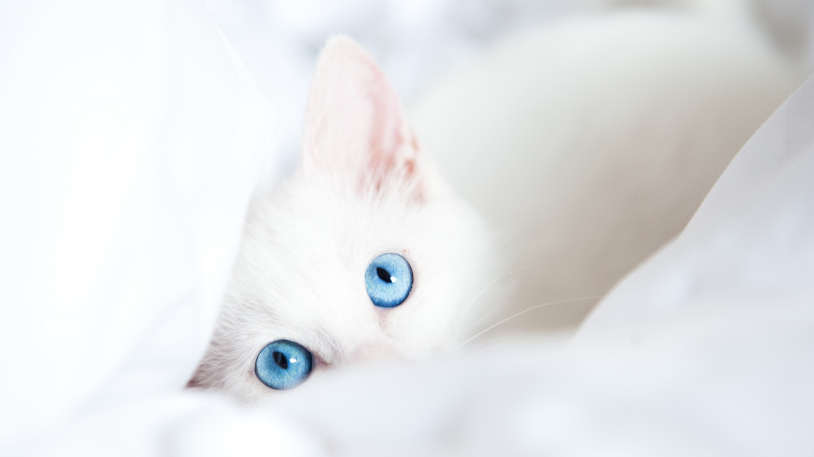

고양이 생선
- 통념과 마찬가지로 고양이는 실제로 대부분 생선을 좋아한다. 고양이가 살아가기 위해서는 타우린 성분이 필요하고 이게 없으면 생식능력 저하, 야맹증, 실명 등이 일어나는데, 고양이는 개와 달리 스스로 타우린을 합성하지 못하기 때문에 본능적으로 타우린이 많이 들어간 먹잇감을 찾게 된다. 1온스당 소고기 5.5~10mg, 닭고기 9.5mg, 생선 36mg, 새우 48mg의 타우린이 들어있다. 보다시피 수산물에 압도적으로 많이 들어있다. 단, 오징어나 새우는 고양이가 좋아하기는 하지만 알레르기성 질환이 생기기 쉬우므로 주지 말자. 사실 야생에서는 고양이가 잡은 작은 동물(곤충도 포함)을 생으로 싹 먹다보니 따로 타우린이 부족하지 않은데 고양이 사료는 살부분과 여러가지 식물성 재료를 섞어서 조리해서 만들다 보니 타우린이 부족해지는 것이다. 타우린은 열에 어느 정도 약해서 조리하면 상당량이 파괴된다.
- 어릴 때 닭고기를 먹어보지 않고 자란 고양이는 커서도 닭고기에 심드렁한 반응을 보이는데, 생선의 경우에는 고양이가 다 자란 후 생전 처음 생선을 접해도 무척 맛있게 먹는 경우가 많다. 다만 집고양이들은 고기나 사료에서 타우린 성분을 충분히 섭취할 수 있기 때문에 생선을 시큰둥해하고 다른 고기만 좋아하기도 한다. 즉, 정확히는 고양이가 생선 자체를 좋아한다기보다는 타우린이 많은 음식을 좋아하는 것이다.
- 모든 고양이가 주식을 생선으로 먹는다는 생각을 하지 말자. 고양이가 생선을 먹는 경우를 사람에 비유하자면 집에 밥과 반찬이 있는데 굳이 라면을 끓여먹는 경우라고 생각하면 된다. 다만, 고양이 간식으로 나온 통조림 같은건 예외다.